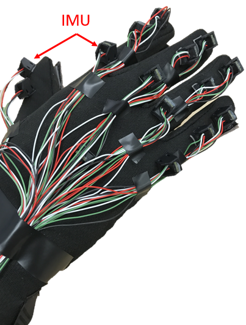
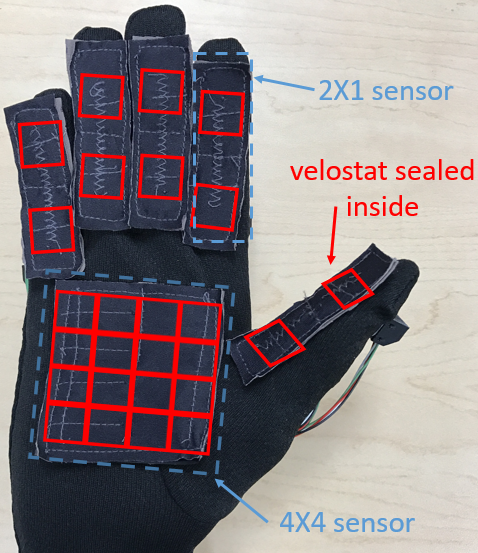
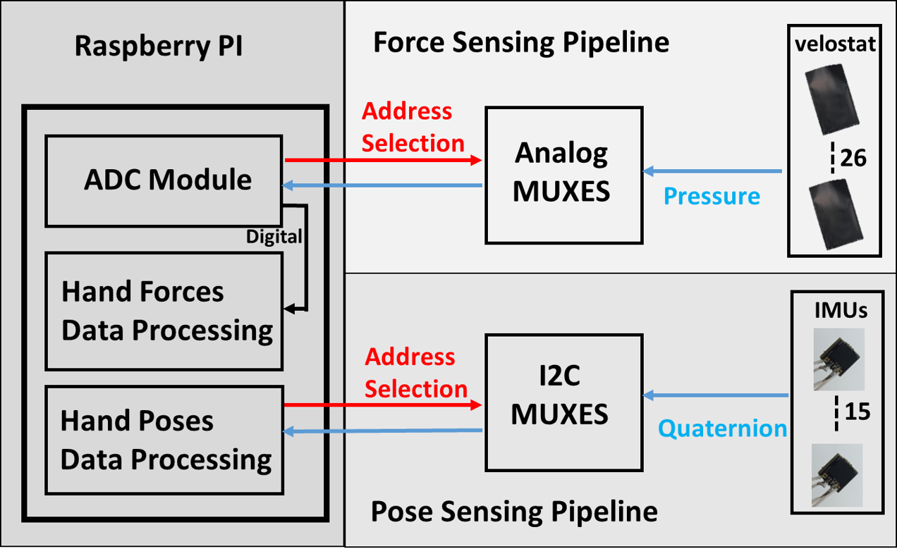
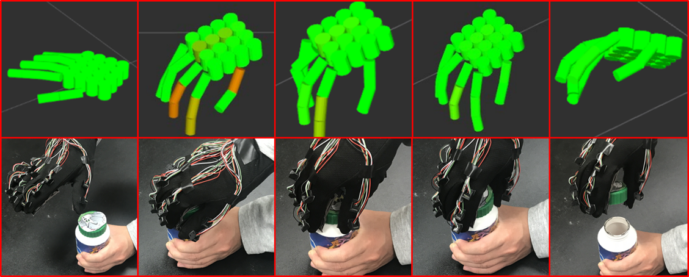
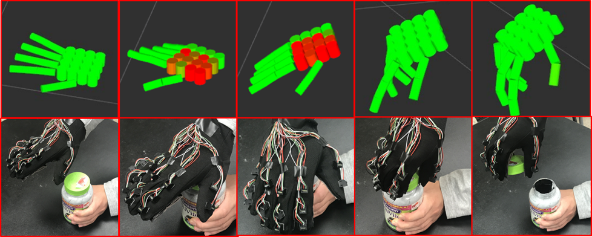
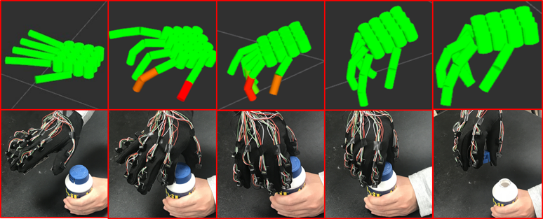

Abstract
We present a design of an easy-to-replicate glove-based system that can reliably perform simultaneous hand pose and force sensing in real time, for the purpose of collecting human hand data during fine manipulative actions. The design consists of a sensory glove that is capable of jointly collecting data of finger poses, hand poses, as well as forces on palm and each phalanx. Specifically, the sensory glove employs a network of 15 IMUs to measure the rotations between individual phalanxes. Hand pose is then reconstructed using forward kinematics. Contact forces on the palm and each phalanx are measured by 6 customized force sensors made from Velostat, a piezoresistive material whose force-voltage relation is investigated. We further develop an open-source software pipeline consisting of drivers and processing code and a system for visualizing hand actions that is compatible with the popular Raspberry Pi architecture. In our experiment, we conduct a series of evaluations that quantitatively characterize both individual sensors and the overall system, proving the effectiveness of the proposed design.
Demo
-
 -
 -

-
 -
 -

Publication
A Glove-based System for Studying Hand-Object Manipulation via Pose and Force Sensing
Hangxin Liu*, Xu Xie*, Matt Millar*, Mark Edmonds, Feng Gao, Yixin Zhu, Veronica Santos, Brandon Rothrock, Song-Chun Zhu (*Equal contributors)
IEEE/RSJ International Conference on Intelligent Robots and Systems (IROS), 2017
[PDF] [Slides]